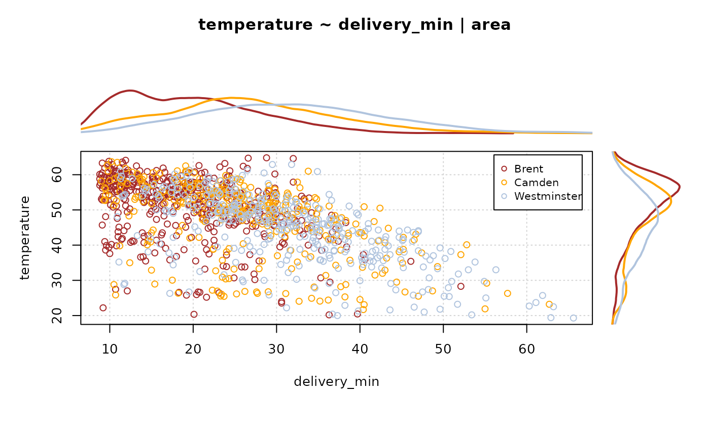

PlotMarDens.RdDraw a scatter plot with marginal densities on the x- and y-axis. Groups can be defined by grp.
numeric vector of x values.
numeric vector of y values (of same length as x).
grouping variable(s), typically factor(s), all of the same length as x.
the x limits of the plot.
the y limits of the plot.
the colors for lines and points. Uses rainbow() colors by default.
which marginal densities to plot. Can be set to either just x or y, or both ("all", latter being the default).
a vector of plotting characters or symbols.
magnification to be used for plotting characters relative to the current setting of cex.
a main title for the plot, see also title.
logical, should NAs be omitted? Defaults to FALSE.
list of additional arguments for the legend. args.legend set to NA prevents a legend from being drawn.
list of additional arguments to be passed to density.
Use args.dens = NA if no density curve should be drawn. The defaults are taken from density.
further arguments are passed to the function plot().
# best seen with: x11(7.5, 4.7)
# just one variable with marginal densities
PlotMarDens( y=d.pizza$temperature, x=d.pizza$delivery_min, grp=1
, xlab="delivery_min", ylab="temperature", col=SetAlpha("brown", 0.4)
, pch=15, lwd=3
, panel.first= grid(), args.legend=NA
, main="Temp ~ delivery"
)
#> Warning: argument 1 does not name a graphical parameter
# use a group variable
PlotMarDens( y=d.pizza$temperature, x=d.pizza$delivery_min, grp=d.pizza$area
, xlab="delivery_min", ylab="temperature", col=c("brown","orange","lightsteelblue")
, panel.first=list( grid() )
, main = "temperature ~ delivery_min | area"
)
#> Warning: argument 1 does not name a graphical parameter

# reset layout
par(mfrow=c(1,1))